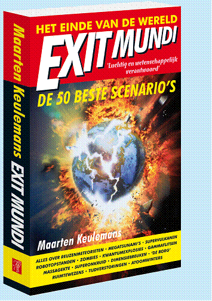

(Klik op het icoontje om het boek te bestellen)
" We kunnen met een gerust hart stellen dat het einde der tijden nog nooit met zoveel humor is aangekondigd"Intermediair
"Verslavend... Geschreven met niet aflatende opgewektheid. Maar toch, eraan ga je."
- New Scientist
--
"Zeer luchtig geschreven... Ondanks het sinistere thema uitstekend gelukt."
- Trouw
--
"Een overtuigende oproep om onbevreesd van het leven te genieten"
- NRC Handelsblad
--
"Ook begrijpelijk voor de volstrekte leek"
- Panorama
Maarten Keulemans: Exit Mundi, het einde van de wereld. De 50 beste scenario's.
(april 2008)(van de achterflap)
De zeespiegel stijgt, de vogelgriep komt! Sinds mensenheugenis voorspellen we al het einde der tijden, maar hoe zit het nou echt? Is het denkbaar dat we worden opgeslokt door onze computers, aangevallen door buitenaardse wezens, opgegeten door nanomachines of verpletterd door een meteoriet? En hoe groot is de kans dat de tijd achteruit gaat lopen of dat alle mannen uitsterven?
Met humor en kennis van zaken controleert Maarten Keulemans (Natuurwetenschap & Techniek, De Volkskrant) het heelal, de aarde en de mensheid op haarscheurtjes en scheidt daarbij het apocalyptische kaf van het koren.